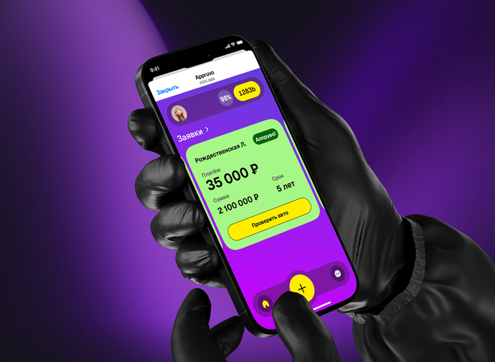

Контекст
AppRuvo помогает дилерам проводить сделки автофинансирования, когда банки отказали клиенту или нужна альтернативная модель покупки.

Product Designer · 2025 - по н.в.
Исследовала путь сделки изнутри автосалона: от заявки и отказов банков до одобрения и действий внутренних команд. Собрала service blueprint, который помог увидеть, где процесс буксует и что нужно решать не только в интерфейсе, но и в сервисе.
AppRuvo помогает дилерам проводить сделки автофинансирования, когда банки отказали клиенту или нужна альтернативная модель покупки.
Команда видела отдельные UX-проблемы, но не понимала полный путь сделки: что происходит до нас, внутри автосалона, после заявки и на стороне внутренних команд.
Я спланировала и провела полевые исследования, наблюдала за работой менеджеров, собрала journey map и service blueprint, а затем перевела инсайты в продуктовые возможности.
Команда получила целостную карту сделки, список узких мест и основу для приоритизации решений в продукте и сервисе.
Продукт работает на стыке автосалона, клиента, финансирования и внутренних операций. На результат сделки влияет не только интерфейс, но и документы, коммуникации, статусы, решения внутренних команд и ожидания клиента.
У команды были гипотезы про интерфейс: какие статусы непонятны, где пользователи теряются, какие данные сложно заполнять. Но было неясно, является ли интерфейс настоящей причиной проблем — или это симптомы более широкого сервисного процесса.
План исследования, интервью, наблюдения, field notes.
Journey map, service blueprint, выявление backstage-процессов.
Связь проблем с воронкой сделки, приоритизация возможностей, рекомендации для roadmap.
Менеджеры могли описывать процесс “как должно быть”, но не “как происходит на самом деле”. Поэтому я пошла в поле: наблюдала за работой в автосалоне, переключениями между задачами, бумажными заметками, звонками, мессенджерами и обходными путями.
Placeholder под field notes, быстрые записи и наблюдения.
Placeholder под черновые схемы маршрута сделки и ролей.
Placeholder под экранные состояния, документы и чекпоинты.
Blueprint показал, какие узкие места возникают из-за нехватки информации на экране, а какие — из-за ручных процессов, ожидания решений или разрыва коммуникации между ролями.
Почему важно: Ему нужно быстро понять, какая сделка требует действия сейчас, а какая просто ожидает ответа.
Возможность: Усилить приоритизацию заявок, статусы и next best action.
Почему важно: Менеджеру нужно быстро объяснить альтернативу, иначе клиент может уйти или отложить покупку.
Возможность: Дать менеджеру понятные условия, аргументы и сценарии коммуникации.
Почему важно: Даже хороший экран не решит задержки, если непонятно, кто следующий ответственный.
Возможность: Связать продуктовые статусы с операционными действиями команды.
Почему важно: Проблемы проявляются не при создании заявки, а когда сделка уже почти готова.
Возможность: Заранее подсвечивать недостающие данные и риски.
Почему важно: Блокноты, звонки и мессенджеры компенсируют нехватку прозрачности в системе.
Возможность: Встроить контрольные точки и напоминания в продукт.
| Инсайт | Риск для сделки | Возможность | Потенциальное решение |
|---|---|---|---|
| Непонятно, что делать дальше | Сделка зависает | Next action | Подсказка следующего шага |
| Статусы не объясняют реальное состояние | Менеджер уточняет вручную | Прозрачные статусы | Статус + причина + ответственный |
| Данные собираются хаотично | Ошибки на финале | Превентивный чеклист | Чеклист документов и авто |
| Внутренние команды подключаются неявно | Потеря ответственности | Видимость backstage | Ответственный и SLA на этапе |
Быстрые улучшения интерфейса — статусы, подсказки, чеклисты.
Изменения в сервисном процессе — backstage, SLA, роли ответственных.
Косметические улучшения.
Не брать в работу сейчас.
Проблема: статус не давал картины целиком.
Решение: единая карточка сделки.
Почему так: менеджеру нужен центр принятия решений.
Как проверить: наблюдение за прохождением реальных кейсов.
Проблема: непонятно, что делать после статуса.
Решение: next action внутри карточки.
Почему так: снижает ручные уточнения.
Как проверить: частота перехода к следующему действию.
Проблема: сделка зависает без объяснения.
Решение: причина задержки рядом со статусом.
Почему так: менеджер быстрее понимает контекст.
Как проверить: снижение ручных обращений.
Проблема: непонятно, кто держит следующий шаг.
Решение: видимость ответственного и SLA.
Почему так: убирает размытость ownership.
Как проверить: доля зависших сделок по этапам.
Проблема: ошибки проявляются слишком поздно.
Решение: превентивный чеклист документов и авто.
Почему так: помогает снизить финальные сбои.
Как проверить: доля заявок с неполными данными.
Проблема: менеджер по-разному объясняет альтернативу.
Решение: готовые сценарии объяснения условий.
Почему так: снижает потерю клиента после отказа банков.
Как проверить: наблюдение за переговорами и конверсия.
Проблема: все сделки выглядят одинаково срочными.
Решение: очередность по риску и стадии.
Почему так: поддерживает потоковую работу менеджера.
Как проверить: скорость реакции на критичные сделки.
Проблема: риски всплывают слишком поздно.
Решение: ранние предупреждения и блокеры.
Почему так: помогает не терять сделку на финале.
Как проверить: доля сделок, прошедших без повторных уточнений.
Так как исследование проходило до полноценной оценки эффекта, я разделила метрики на продуктовые, операционные и поведенческие, чтобы команда могла проверить влияние решений после запуска.
Service blueprint помог синхронизировать понимание сделки между продуктом, дизайном, разработкой и внутренними командами. Стало проще обсуждать, где пользовательская боль, где сервисный разрыв, а где техническое или процессное ограничение.
Появились понятные зоны улучшения: статусы, next action, карточка сделки, чеклисты и приоритизация.
Стало видно, где сделка буксует из-за backstage-процессов и коммуникаций.
Исследование подсветило точки, влияющие на скорость сделки, конверсию в оплату и доверие дилеров.